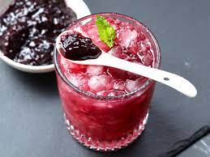

Gin and Jam Cocktail

This gin and jam cocktail, refreshing and fruity, is a versatile gin cocktail that
is sure to become your new summer favorite. Use any flavor jam you like!
Ingredients
- 2 fluid ounces gin
- 1 tablespoon jam, blackberry or any flavor
- 3/4 fluid ounce fresh lemon juice
- 1/2 fluid ounce simple syrup
- 1 cup ice cubes
- 1 cup crushed ice
- 1 mint leaf
- 1 splash club soda (optional)
Steps
- Place gin, jam, lemond juice and simple syrup in a cocktail shaker.
- Add 1 cup ice cubes.
- Seal and shake vigorously until outside is frosted, 10 to 15 seconds.
- Fill a glass with crushed ice
- Strain cocktail into the glass.
- Top with a splash of club soda, if desired
- Garnish with mint leaf.
Return to Odin Recipes page